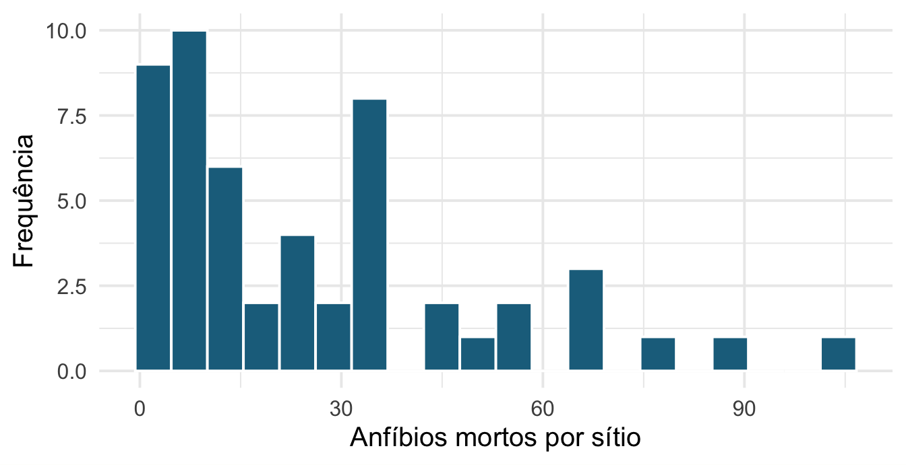
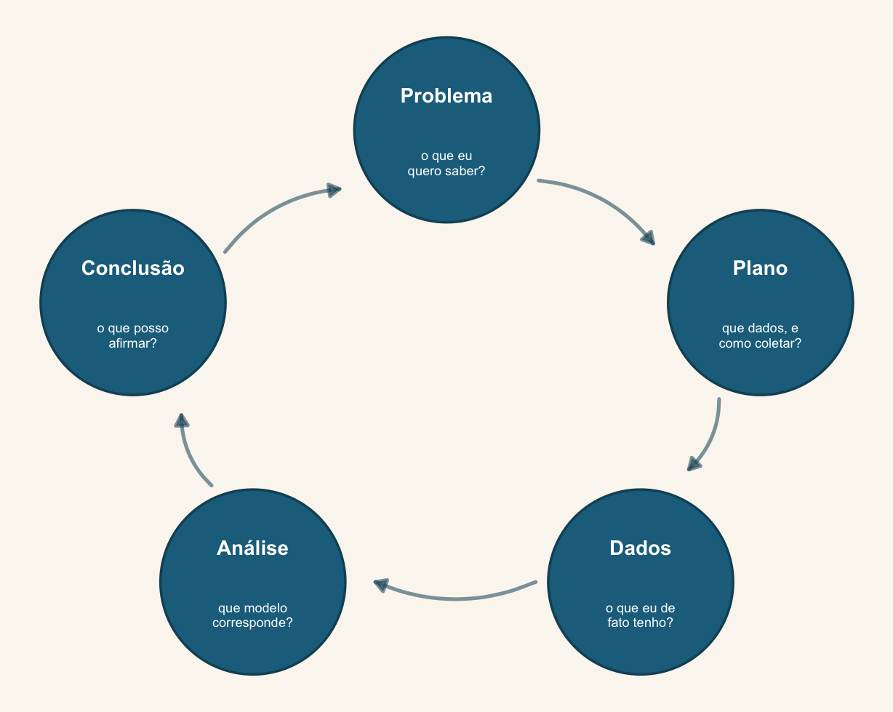
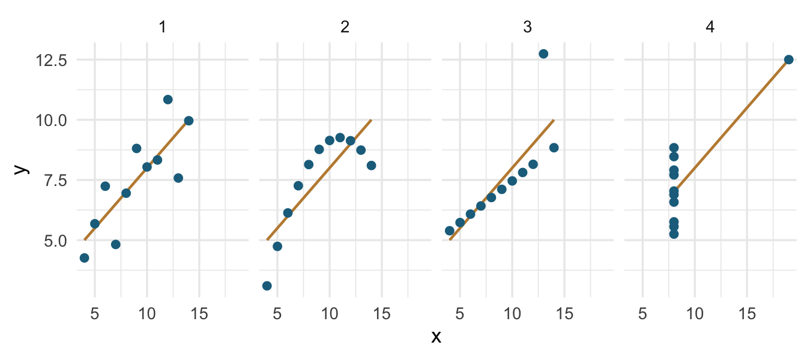
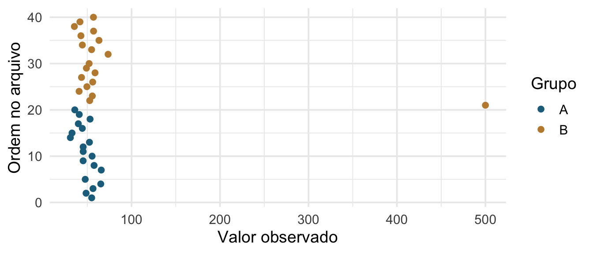
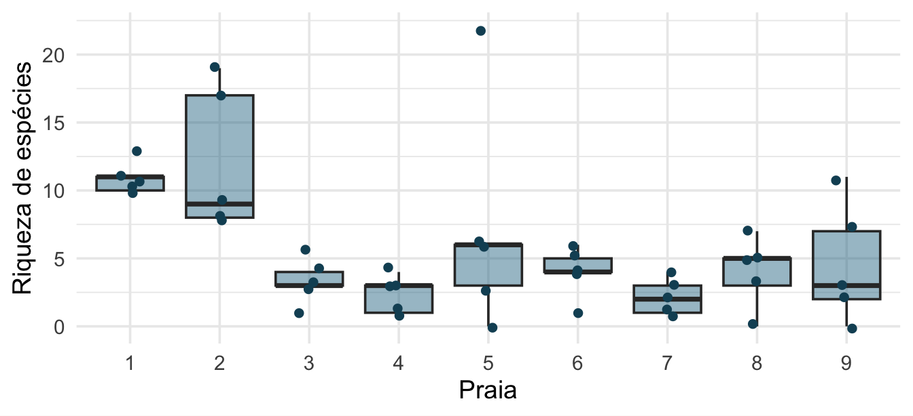
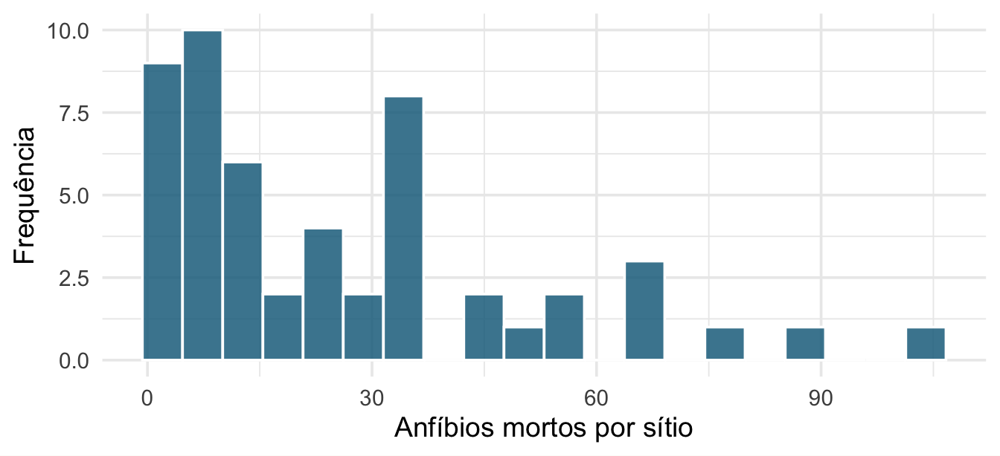
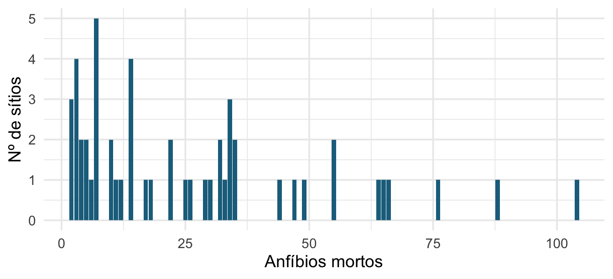
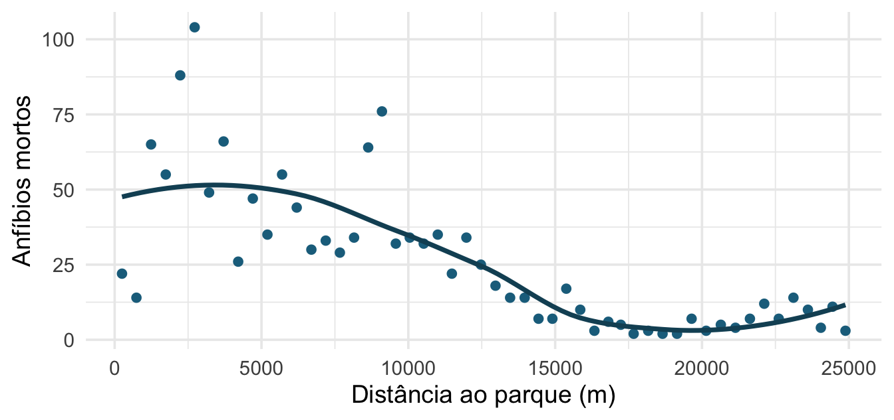

[1] 52 23 TOT.N D.PARK OPEN.L L.WAT.C
1 22 250.214 22.684 0.583
2 14 741.179 24.657 1.419
3 65 1240.080 30.121 2.005
4 55 1739.885 50.277 1.924Encontro 1 · Análise de Dados Univariados · PPGBA/UFMS
21 de setembro de 2026
Análise de Dados Univariados — 45 h, cinco dias.
Quatro coisas que este curso vai tentar fazer com vocês:
Praticamente tudo que você aprendeu como “teste estatístico” é um modelo linear com uma matriz de delineamento diferente.
A partir daí, o caminho é sempre relaxar uma premissa de cada vez:
| Relaxamos | Chegamos em |
|---|---|
| a distribuição da resposta | GLM |
| a independência das observações | GLMM |
| a certeza sobre qual modelo usar | seleção de modelos |
| a certeza sobre os parâmetros | inferência bayesiana |
Cada encontro abre com 20 minutos de productive failure:
O objetivo não é acertar. É explicitar o que vocês já assumem sem perceber. Grupos são montados com formação quantitativa deliberadamente heterogênea.
Vocês têm contagens de anfíbios mortos por atropelamento em 52 sítios ao longo de uma rodovia em Portugal, com variáveis da paisagem em cada sítio: distância ao parque mais próximo, distância a áreas urbanas, cobertura de diferentes tipos de vegetação, densidade de estradas.
Pergunta: quais características da paisagem explicam a mortalidade de anfíbios na estrada?
Em grupos, por 10 minutos, escrevam:
[1] 52 23 TOT.N D.PARK OPEN.L L.WAT.C
1 22 250.214 22.684 0.583
2 14 741.179 24.657 1.419
3 65 1240.080 30.121 2.005
4 55 1739.885 50.277 1.924Dados de Zuur, Ieno & Smith, usados em Mixed Effects Models and Extensions in Ecology with R (2009). Voltaremos a eles no Encontro 5.

Contagem. Só inteiros não negativos. Variância cresce com a média. Cauda longa à direita.
Uma regressão linear comum é apropriada aqui? Guardem a resposta.

Wild, C.J. & Pfannkuch, M. 1999. International Statistical Review.
| Etapa | A pergunta que ela responde | Onde aparece no curso |
|---|---|---|
| Problema | o que eu quero saber, em termos mensuráveis? | hoje, e no item 1 do trabalho final |
| Plano | que dados respondem isso, e como coletá-los? | hoje (pré-registro); E7 (delineamento e dependência) |
| Dados | o que eu de fato tenho, e em que estado? | hoje (EDA em 8 passos) |
| Análise | que modelo corresponde a esses dados e a essa pergunta? | E2 a E9 |
| Conclusão | o que posso afirmar, e com que incerteza? | E5 (escala da resposta), E9 (seleção) |
flowchart LR P1[Problema] --> P2[Plano] --> D[Dados] --> A[Análise] --> C[Conclusão] C -.-> P1 A -.-> D
As setas pontilhadas são o ponto: a análise revela problemas nos dados, e a conclusão quase sempre reformula o problema. Isso é legítimo — o que não é legítimo é apagar o percurso e apresentar a última volta do ciclo como se tivesse sido a primeira.
Não é na Análise. É no Problema — a pergunta nunca foi escrita de forma que um parâmetro pudesse respondê-la — e no Plano — a estrutura de coleta não permite separar o efeito de interesse.
Nenhum modelo do Encontro 2 ao 9 conserta isso. É por isso que gastamos a primeira manhã aqui.
Popovic, G. et al. 2024. Four principles for improved statistical ecology. Methods in Ecology and Evolution 15:266–281.
Um levantamento honesto da literatura ecológica encontra os mesmos quatro problemas repetidamente. Eles não são de matemática — são de prática.
Este curso inteiro é uma tentativa de instalar esses quatro hábitos.
Uma pergunta que a análise pode responder com um parâmetro.
| Em vez de | Escreva |
|---|---|
| “investigar a relação entre urbanização e anuros” | “qual a mudança esperada na riqueza de anuros por 10 % de aumento em área impermeabilizada?” |
| “verificar se há efeito do tratamento” | “qual a diferença média de massa entre tratamento e controle, e com que incerteza?” |
A segunda coluna já determina o modelo. A primeira permite justificar qualquer coisa depois.
Observações do mesmo transecto, da mesma poça, do mesmo indivíduo, do mesmo ano não são independentes.
Ignorar isso não é um detalhe técnico: inflaciona a confiança em efeitos que talvez não existam.
→ É o Encontro 7 inteiro.
Um valor de p responde “consigo distinguir de zero?”.
A biologia quer saber quanto, em que direção e com que incerteza.
Coeficiente com unidade e intervalo, na escala da resposta. Sempre.
Código e dados disponíveis, ambiente declarado, análise que roda do zero em outra máquina.
Não é burocracia de revisor. É a única forma de você mesmo conseguir refazer a análise quando o revisor pedir uma alteração — dezoito meses depois.
→ Bloco 6 de hoje.
Hypothesizing After the Results are Known — formular a hipótese depois de ver o resultado, e apresentá-la como se fosse anterior.
O problema não é olhar os dados. É apresentar como confirmatório o que foi exploratório.
Consequência estatística direta: o valor de p deixa de significar o que ele afirma significar.
Não é fraude deliberada, na maior parte das vezes. É a soma de decisões razoáveis tomadas uma de cada vez:
Cada passo é defensável isoladamente. Juntos, garantem um resultado significativo a partir de ruído.
| Confirmatório | Exploratório | |
|---|---|---|
| Hipótese | anterior aos dados | emerge dos dados |
| Nº de modelos | poucos, definidos a priori | muitos |
| Valor de p | interpretável | descritivo |
| O que produz | um teste | uma hipótese para testar depois |
As duas são ciência legítima. O que não é legítimo é trocar o rótulo.
Qual o efeito da quantidade de nitrogênio do solo na taxa de crescimento per capita de árvores adultas do gênero Pinus?
Antes de qualquer estatística, ela já traz a resposta (taxa de crescimento per capita), a preditora (nitrogênio no solo), a unidade (árvore adulta) e o grupo (Pinus).
E a hipótese que a sustenta diz o mecanismo:
O nitrogênio está presente em várias moléculas orgânicas envolvidas no processo de crescimento de plantas em geral. Logo, espero que quanto maior a quantidade de nitrogênio disponível no solo, maior seja a taxa de crescimento per capita de uma população de plantas do gênero Pinus.
Pergunta → hipótese (o mecanismo) → previsão (a direção). Sem o meio não há o que testar; há só uma correlação para comentar depois.
Uma pergunta de projeto de verdade:
Será que a poluição afeta os girinos?
Sozinhos (3 min). Reescrevam num papel, de modo que a pergunta diga: que poluente e medido como; que resposta e em que unidade; que espécie e que estágio; onde e quando.
Em duplas (4 min). Comparem as duas versões e cheguem a uma só.
Duas duplas compartilham (3 min).
Depois façam o mesmo com a pergunta do capítulo de vocês. Se ela não couber numa frase com resposta, preditora e unidade, o problema não é de redação — é que a análise ainda não tem alvo.
Registrar pergunta, delineamento e plano de análise antes de coletar ou de analisar.
15 minutos.
Na volta: o protocolo de exploração de dados, em oito passos.
Protocolo de Zuur, Ieno & Elphick (2010), Methods in Ecology and Evolution; apresentação dos resultados segundo Zuur & Ieno (2016).
Sem protocolo, exploração vira caça ao resultado.
Com protocolo, é uma lista de verificação: oito perguntas, na mesma ordem, sempre — antes de ajustar qualquer modelo.
Explorar dados serve para detectar problemas, não para escolher a hipótese.
# o anscombe vem em oito colunas: x1..x4 e y1..y4
quarteto <- data.frame(
conjunto = rep(1:4, each = nrow(anscombe)),
x = unlist(anscombe[, 1:4]),
y = unlist(anscombe[, 5:8])
)
ggplot(quarteto, aes(x, y)) +
geom_smooth(method = "lm", se = FALSE, colour = "#c08a3e", linewidth = .8) +
geom_point(size = 2, colour = "#1c6e8c") +
facet_wrap(~ conjunto, nrow = 1) +
theme_minimal(base_size = 13)
Os quatro conjuntos de Anscombe (1973) têm a mesma média de x e de y, o mesmo desvio-padrão, a mesma correlação (0,816) e a mesma reta de regressão (\(y = 3 + 0{,}5x\)) — idênticos até a terceira casa decimal.
Nenhuma estatística-resumo distingue os quatro. O gráfico distingue em um segundo. É por isso que o protocolo abaixo começa por olhar, e não por calcular.
O pacote quartets reúne este e outros conjuntos com a mesma moral — inclusive um quarteto causal, em que as quatro estruturas causais produzem números idênticos. Voltamos a ele no Encontro 5.
O gráfico de Cleveland é mais informativo que o boxplot: mostra cada observação contra a ordem no arquivo.
library(tidyverse)
dados <- read_delim("../dados/dados_com_outliers_e_faltantes.csv", delim = ";")
dados |>
mutate(ordem = row_number()) |>
ggplot(aes(x = Pontuacao, y = ordem, colour = Grupo)) +
geom_point() +
scale_colour_manual(values = c("#1c6e8c", "#c08a3e")) +
labs(x = "Valor observado", y = "Ordem no arquivo") +
theme_minimal(base_size = 14)
Três perguntas, nesta ordem:
Remover observações porque incomodam o modelo é a forma mais comum de p-hacking em ecologia.
rikz <- read.table("../dados/RIKZ.txt", header = TRUE, row.names = 1) |>
mutate(Beach = factor(Beach))
ggplot(rikz, aes(Beach, Richness)) +
geom_boxplot(fill = "#1c6e8c", alpha = .45, outlier.shape = NA) +
geom_jitter(width = .12, colour = "#144f64", size = 1.7) +
theme_minimal(base_size = 14) +
labs(x = "Praia", y = "Riqueza de espécies")
# A tibble: 9 × 4
Beach n media dp
<fct> <int> <dbl> <dbl>
1 1 5 11 1.22
2 2 5 12.2 5.36
3 3 5 3.4 1.82
4 4 5 2.4 1.34
5 5 5 7.4 8.53
6 6 5 4 1.87
7 7 5 2.2 1.3
8 8 5 4 2.65
9 9 5 4.6 4.39Olhem a coluna dp: vai de 1,22 na praia 1 a 8,53 na praia 5 — sete vezes. Cinco amostras em cada uma, o mesmo protocolo em todas. A dispersão não é constante entre praias, que é exatamente o que o modelo linear supõe que seja.
E repare de onde vem a heterogeneidade: não de uma preditora contínua, mas do agrupamento. Isso não é ruído a corrigir — é estrutura do delineamento, e é o Encontro 7.

Contagem, assimétrica à direita, de 2 a 104 em 52 sítios. Média 25,9 e variância 589,3 — a variância é 22,7 vezes a média. Para uma Poisson elas seriam iguais; já dá para saber, aqui, que ela não vai servir (Encontro 6).
Atenção: o modelo linear não assume que a resposta é normal. Assume que o resíduo é. Voltaremos a isso no Encontro 2 — é um dos mal-entendidos mais caros da estatística aplicada.

Quantos zeros são “demais” depende da distribuição assumida — é uma pergunta sobre o modelo, não sobre os dados. Encontro 6.
D.PARK OPEN.L L.WAT.C MONT.S
D.PARK 1.00 0.27 0.28 0.07
OPEN.L 0.27 1.00 0.23 -0.15
L.WAT.C 0.28 0.23 1.00 -0.04
MONT.S 0.07 -0.15 -0.04 1.00Preditoras muito correlacionadas não violam premissa nenhuma — elas tornam os coeficientes individualmente não identificáveis. O modelo prediz bem e interpreta mal.

Decrescente e claramente não linear. Uma reta ajustada aqui erraria de forma sistemática, não aleatória.
A pergunta que não se responde com gráfico: responde-se olhando o delineamento amostral.
Se a resposta for sim para alguma, você precisa de efeitos aleatórios (Encontro 7) ou de uma estrutura de correlação.
Você submete. Volta em 14 meses com “refaça a Figura 3 excluindo os juvenis”.
E então: em qual das sete pastas está o script que gerou a Figura 3? Que versão dos dados ela usou? Por que o número na tabela não bate com o do texto?
Reprodutibilidade é, antes de tudo, um favor que você faz a si mesmo.
Your best collaborator is yourself six months from now, and your past self doesn’t answer emails.
Dear past-Hadley: PLEASE COMMENT YOUR CODE BETTER. Love present-Hadley.
— Hadley Wickham (@hadleywickham, 7 de abril de 2016)
Quem escreveu boa parte do tidyverse também não entende o próprio código de seis meses atrás. A conclusão não é que ele seja desorganizado — é que ninguém consegue, e por isso o comentário não é firula.
Comente o porquê, não o quê. # filtra juvenis é redundante com o código; # juvenis fora: o protocolo de campo mudou em 2019 e a medida não é comparável é o que o seu eu de 2028 precisa.
meu-projeto/
├── meu-projeto.Rproj
├── dados/
│ ├── brutos/ # nunca editados, nunca sobrescritos
│ └── processados/
├── scripts/
├── figuras/
└── relatorio.qmdRegra que resolve metade dos problemas: dados brutos são somente-leitura. Toda limpeza acontece em código.
here() resolve a partir da raiz do projeto. O script roda na sua máquina, na do orientando e no GitHub Actions.
here() acha a raizAo ser carregado, o here sobe a árvore de diretórios a partir de onde o R está e para no primeiro diretório que contenha uma âncora. As duas que importam na prática: um arquivo .Rproj e uma pasta .git. Esse diretório vira a raiz, e here("dados", "x.csv") monta o caminho a partir dele.
O detalhe que morde: um .Rproj vazio não conta. O critério exige que o arquivo comece com Version:. Sem âncora válida, o here não avisa nada — ele simplesmente devolve o diretório de trabalho atual, e o script passa a funcionar só quando você o abre do lugar certo.
Se here::here() apontar para um lugar estranho, é isso. Crie o projeto do RStudio, ou declare a raiz à mão com here::i_am("scripts/analise.R").
setwd() faz o oposto: fixa no código um caminho que só existe no seu computador. É a única linha de um script que tem garantia de quebrar na máquina de outra pessoa.
Texto, código e resultado no mesmo arquivo. O número do texto é o número que o código calculou.
Nunca mais copiar e colar um resultado — e nunca mais esquecer de atualizar o texto quando o dado muda.
O que você ganha:
analise_final_v2_REALFINAL.R.Se estes três comandos não forem familiares, a aula 3 da minha disciplina de introdução ao R cobre git e GitHub do começo, incluindo a configuração inicial. Para os detalhes e para quando algo der errado, Happy Git with R.
Dados e código devem ser:
.csv, não .xlsx com macro);Depositar dados aumenta citação e é exigido por um número crescente de periódicos.
Cooper, N. et al. 2024. Harnessing large language models for coding, teaching and inclusion. Methods in Ecology and Evolution 15:1757–1763.
Vocês já estão usando. Fingir que não é abdicar de formar critério.
O objetivo deste bloco não é proibir nem endossar. É responder: para que servem, para que não servem, e como declarar o uso.
Prediz a próxima palavra a partir de um corpus gigantesco.
Ele não sabe estatística. Ele sabe como textos sobre estatística costumam continuar.
Consequência direta: é bom em código frequente (ggplot2, dplyr, lm()) e ruim em métodos raros ou recentes. Alucinação não é bug — é o comportamento esperado de um sistema que prefere plausibilidade a verdade.
nlme para glmmTMB.lme4.for virando purrr::map().Hmsc, mvabund, gllvm, glmmTMB com ziformula complexa — sub-representados no corpus, alta taxa de alucinação.Terceirize o código. Nunca terceirize o pensamento estatístico.
glmmTMB e poça como efeito aleatório”.Vale igual no trabalho final desta disciplina.
| Norma | O que exige |
|---|---|
| COPE, Authorship and AI tools | IA não pode ser autora — não tem como assumir responsabilidade pelo trabalho; o uso deve ser inteiramente transparente |
| CNPq, Portaria nº 2.664, de 6 de março de 2026 | Declarar qualquer uso de IA generativa, em qualquer fase da pesquisa, especificando ferramenta e finalidade; autores integralmente responsáveis, inclusive por plágio ou imprecisão da ferramenta; uso em pareceres não é recomendado |
| AIdIT (Drobniak et al. 2026) | O formato da declaração: ferramenta e versão, cada uso mapeado à etapa do ciclo de pesquisa, e como a saída foi verificada |
A Portaria do CNPq é a que tem consequência administrativa para bolsista. As três dizem a mesma coisa em graus diferentes: declare o que usou, e responda pelo que saiu.
O LLM escreve o código; você escreve a ciência.
O ciclo PPDAC é o mapa; os quatro princípios são o critério de qualidade; o protocolo de oito passos é a lista de verificação. O resto do curso é a etapa “Análise”.
Leitura: Gelman, Hill & Vehtari (2020), Regression and Other Stories, caps. 1 (Introduction) e 2 (Data and measurement) — dá para ler no intervalo do almoço.
Exercício: rodem o protocolo de oito passos nos seus dados e escrevam meia página sobre o que encontraram. Vamos usar isso nas práticas da semana inteira, então não deixem para depois.
Daqui a pouco: teste t, correlação e regressão deixam de ser três coisas.
Análise de Dados Univariados · PPGBA/UFMS · 2026/2